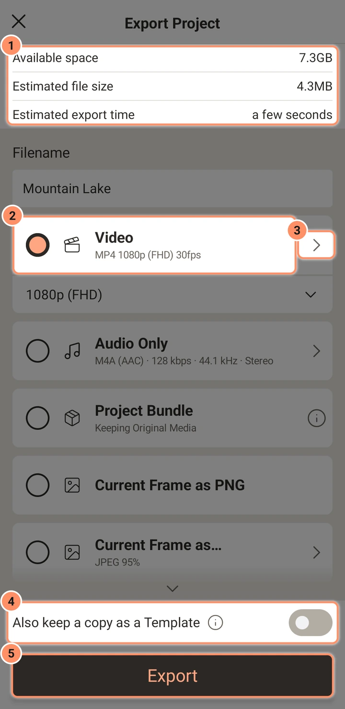
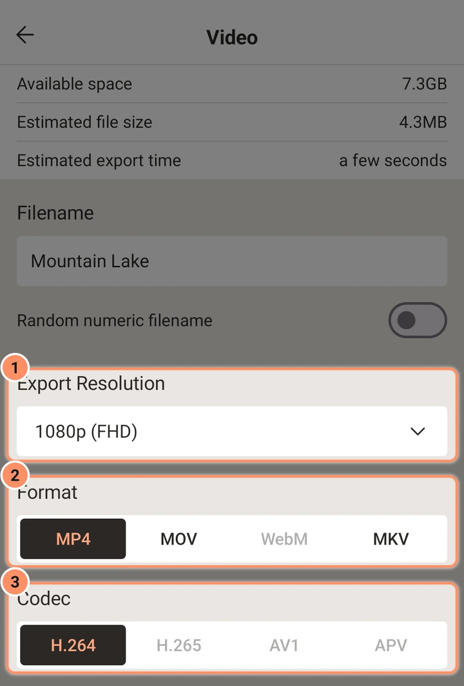
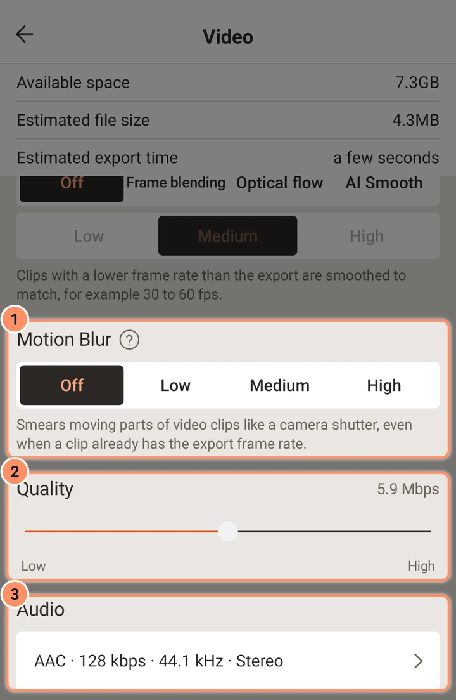
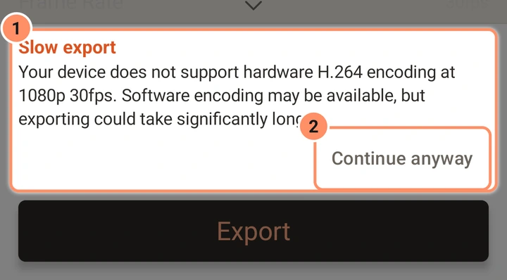

导出
所有导出选项：视频格式和编解码器、分辨率、帧率、GIF、图片序列、音频文件、项目包，以及应用进行的各项检查。
点按编辑器顶部栏中的 导出并分享（分享图标），或在主屏幕上项目卡片的菜单中点按 导出。该屏幕名为 导出项目。
屏幕
顶部有三行信息：可用空间、预计文件大小和 预计导出时间。其下是 文件名 输入框，然后是各类导出的卡片；点按卡片即可选中，点按其箭头可查看选项。底部是 同时保存一份模板 开关和醒目的 导出 按钮。

当无法导出时，按钮会变灰并显示原因：存储空间不足 或 此手机不支持。手机无法完成的选项会变暗，点按后会说明原因。应用会记住每种导出的设置，但视频导出总是从项目自身的帧率开始。
| 卡片 | 结果 | 保存位置 |
|---|---|---|
| 视频 | MP4、MOV、MKV 或 WebM | Movies/AbsentMotion |
| 仅音频 | WAV、FLAC、M4A、OGG 或 MP3 | Music/AbsentMotion |
| 项目包 | 一个包含项目及其媒体的 .absproj 文件 | Documents/AbsentMotion |
| 当前帧为 PNG | 播放头所在帧的一张 PNG 图片 | Pictures/AbsentMotion |
| 当前帧为... | 一张图片：PNG、JPEG、WebP、无损 WebP 或 BMP | Pictures/AbsentMotion |
| 图片序列 | 每帧一张图片，保存在一个文件夹中 | Pictures/AbsentMotion |
| GIF | 一个动画 GIF | Pictures/AbsentMotion |
| XML | 仅项目文件，供其他工具使用（仅可从项目列表中导出） | Documents/AbsentMotion |
文件名 栏默认为项目名称，你可以修改；字母、数字以及空格、点、短横线、下划线、逗号和加号会被保留。在视频、当前帧、GIF 和图片序列的选项中，随机数字文件名 开关会为每次导出生成一个随机的 16 位数字名称，此时文件名栏会显示“导出时生成”。文件通过 Android 的标准媒体存储保存，因此其他应用和相册都能看到它们。如果导出失败或你取消导出，未写完的文件会被删除。
视频
导出分辨率。 2160p（4k）、1440p（QHD）、1080p（FHD）、720p（HD）、540p（SD）、360p、270p 或 180p。数字表示短边；长边随项目的形状而定。默认值是不超过项目自身尺寸的最大尺寸。手机视频编码器无法生成的尺寸会变暗并显示原因。
格式和编解码器。 格式是文件类型；编解码器是画面的压缩方式。
| 格式 | 编解码器 |
|---|---|
| MP4 | H.264、H.265、AV1、APV |
| MOV | H.264、H.265 |
| WebM | VP9、AV1 |
| MKV | H.264、H.265、AV1、VP9 |
只有当手机具备该编解码器的编码器时，才会提供该选项（例如“此手机没有 AV1 编码器。”）。H.264 是默认选项，可在所有设备上播放。H.265 在相同画质下文件更小，但某些旧播放器无法打开。AV1、VP9 和 APV 取决于手机。切换格式时，如果当前编解码器仍然适用，则保留；否则应用会自动选择一个适用的编解码器。

帧率。 一个滑块，刻度为 10、15、24、25、30、48、50 和 60 fps，另外还有项目自身的帧率。默认值为项目的帧率。
帧插值。 选择一种方法，再选择一个级别；点按帮助按钮可查看每种方法的说明，以及你的手机应能以何种程度处理。当视频片段的帧率低于导出帧率时，它就很重要，例如 30 fps 的片段导出为 60 fps：
- 关闭： 每个片段显示自身的帧。30 fps 的片段在 60 fps 导出中每帧会重复显示两次，因此动作可能看起来有些卡顿。
- 帧混合： 新增的中间帧会将最接近的帧混合，效果类似快速淡入淡出。导出速度快；快速运动可能出现残影。
- 低 更接近最近的真实帧，因此残影较少。
- 中等 将两个最近的帧平均混合。
- 高 混合四帧，动作最柔和；同时会稍微柔化片段自身的帧，使画面不会在清晰与柔和之间闪烁。
- 光流： 应用会追踪画面中各部分的运动，并绘制真实的中间帧。动作最流畅，但导出较慢，且非常快速的运动可能在边缘出现拖影。
- 低 大致追踪运动，速度最快。
- 中等 是均衡的选择。
- 高 最精确地追踪运动，中间帧最干净，耗时最长。
- AI 平滑： 由 AI 模型绘制中间帧。与光流相比，它更能应对快速运动以及边缘出现或消失的情况，但速度慢得多。每个级别需要一次性下载约 11 MB；首次以某个级别导出时会先询问是否下载，屏幕会显示在此手机上大约会增加多少时间。
- 低 使用较轻量的模型，适合性能良好的手机。
- 中等 是推荐的起始模型。
- 高 使用更大的模型处理最困难的场景；适合性能快速的手机或短片段。
它只作用于帧率（计入片段速度）低于导出帧率的视频片段。形状、文本和特效始终会在每个导出帧上绘制。它也可用于 GIF 和图片序列。实时预览从不使用它；若要在预览中看到流畅的帧，请对片段使用 流畅处理（参见照片、视频和速度）。
运动模糊。 关闭、低、中等或 高。它会像相机快门开得更久（四分之一、二分之一或整帧）那样，使视频片段中运动的部分产生拖影。与帧插值不同，即使片段已经是导出帧率，它也会有所帮助：快速摇镜和快速运动会看起来更流畅、更不卡顿。它只会改变视频片段，从不改变形状或文本（对于它们，请使用“运动模糊”特效）。
质量。 一个从 低 到 高 的滑块，会显示对应的码率（例如“5.9 Mbps”）。码率取决于画面尺寸、帧率和编解码器：对于相同的画质，H.265 和 AV1 所需的码率低于 H.264。手机的编码器可能会略作调整。
音频。 一行如“AAC · 128 kbps · 44.1 kHz · 立体声”，点按后会打开视频的音频设置：

- 编解码器： AAC（MP4、MOV、MKV）或 Opus（WebM、MKV）。另一个会变暗并显示原因。
- 码率： 64、96、128（默认）、160、192、256 或 320 kbps。
- 采样率： 44.1 kHz（默认）或 48 kHz。Opus 始终使用 48 kHz。
- 声道： 立体声（默认）或单声道。
没有声音的项目会生成不带音轨的视频。
颜色。 视频以标准 8 位 SDR 视频（BT.709）导出。不支持 HDR 导出。你导入的 HDR 视频会被转换为标准颜色。
透明度。 视频文件没有透明度。项目中的透明区域导出后会显示为黑色。
警告
当手机对你所选的设置只有软件编码器，或其硬件编码器的速度低于你的帧率时，卡片会显示 导出缓慢，并提供 仍要继续 按钮以及 使用 H.264 · 1080p 之类的建议。如果这些设置完全无法导出，卡片会显示 不支持，并附带一个切换到可用设置的按钮。

仅音频
- 格式： WAV 16 位、WAV 24 位、FLAC、M4A（AAC，默认）、OGG（Opus）或 MP3。WAV 和 MP3 在所有手机上都可用；其他格式需要手机具备相应编码器。
- 码率： M4A、OGG 和 MP3 为 64 至 320 kbps。WAV 和 FLAC 为无损格式，没有码率。
- 采样率： 44.1 或 48 kHz（OGG 始终为 48 kHz）。声道： 立体声或单声道。
文件长度为整个项目的时长，包含每个可听片段的混音，以及其音量、特效和限幅器。如果没有可听的内容，该卡片会变暗并显示“此项目没有声音”。
GIF
可选项：透明区域变为白色（默认）或黑色，大小（720p、540p、360p 为默认显示，另有 270p、180p），帧率（5、10、12、15 为默认显示，另有 20、25、30）和帧插值。GIF 每帧有 256 种颜色，并无限循环。GIF 的时间以百分之一秒为单位，因此 30 fps 只是近似值。预计大小是通过编码几个样本帧测得的。
图片序列
每帧一张图片，保存在一个以文件名命名的文件夹中（除非你修改了文件名，否则为项目名称），文件名为 frame_00001.png、frame_00002.png，依此类推。可选项：格式（PNG、JPEG、WebP、无损 WebP、BMP）、质量（50 %、70 %、85 %、95 %（默认）、100 %，适用于 JPEG 和 WebP）、透明区域变为（白色或黑色，仅适用于 JPEG 和 BMP）、分辨率、帧率（10 至 60）和帧插值。PNG 和无损 WebP 会保留透明度。
当前帧
当前帧为 PNG 会以完整的项目尺寸并保留透明度，保存播放头所在的帧。当前帧为... 可添加一种格式（PNG、默认 JPEG、WebP、无损 WebP、BMP），为 JPEG 和 WebP 设置质量（默认 95 %），并设置透明区域的显示方式。在项目列表中操作时，将使用第一帧。
项目包和 XML
- 项目包 会生成一个
.absproj文件，其中包含项目及其使用的原始媒体。可将其作为备份保存，或将项目迁移到另一部手机：参见项目、备份和导入。 - XML 仅保存项目文件，不含媒体。仅可从项目列表中导出。
导出前和导出期间的检查
- 存储空间。 应用需要预计大小加上安全余量。如果超过可用空间，它会提示“空间不足”并停止；如果剩余空间少于 1 GB，它会提示“空间较少”。如果导出期间手机空间耗尽，导出会停止，未完成的文件将被删除。
- 预计值。 大小和时间的预计值会随着导出而越来越准确：应用会从你最近的导出中学习。在此之前，它会使用首次启动时检查所测得的速度。时间预计还会按所选尺寸绘制项目的几帧画面（对于 GIF 和图片序列还会进行编码），因此 VHS 或模糊等重型特效以及大型视频会使耗时更长。
- 编码器繁忙。 如果手机的硬件视频编码器正忙（例如另一个应用占用了它），或拒绝该尺寸和帧率，导出会先请求它按自身速度工作，然后改用较慢的软件编码器，并在运行时说明这一点。只有当所有编码器都拒绝时，它才会停止，并显示“此手机的视频编码器繁忙或无法生成此尺寸”。
- 缺少媒体。 如果项目使用了手机上不存在的文件，应用会先列出它们（“缺少媒体”）。仍然导出 会排除这些图层。
- 发热。 如果手机变热，导出会有意放慢速度，每帧之后稍作暂停，并显示提示。过热时，它会在帧之间暂停，直到冷却下来。
- 离开应用。 视频、音频、GIF、图片序列或项目包导出在你切换到其他应用时会继续进行：通知栏会显示其进度，并带有 取消 按钮；如果导出在你离开期间完成，它会告知你。在 Android 13 及更高版本上，应用会在首次导出时询问一次是否允许显示通知；如果你拒绝，导出仍会继续，只是不显示通知。从最近使用的应用列表中关闭 AbsentMotion 会停止导出。应用打开时屏幕会保持常亮。没有暂停按钮；取消（或返回按钮）会立即停止导出并删除未完成的文件。
- 导出后检查。 完成的视频和音频文件会被重新打开并检查：音轨是否存在、时长是否正确、首帧和末帧是否可读，并将中间的一帧画面与项目在该处的显示进行比较，从而发现黑屏或冻结的视频。结果会显示为“已检查：播放正常”。图片和 GIF 也会进行检查。如果有问题，它会告诉你具体情况。
完成后
已保存到存储空间 屏幕会显示文件的位置并播放它（或逐张显示图片或图片序列；如果手机暂时无法播放视频，则会显示其首帧和一个点击后会重试的播放按钮），并提供 分享视频、分享 GIF、分享图片序列、分享图片、分享音频 或 分享项目 XML 按钮，以通过 Android 的分享菜单发送，以及 确定 按钮。
保留模板副本
同时保存一份模板 开关（每次都默认关闭）会在导出成功后，将项目及其媒体保留在主屏幕的模板下。参见素材、模板和预设。